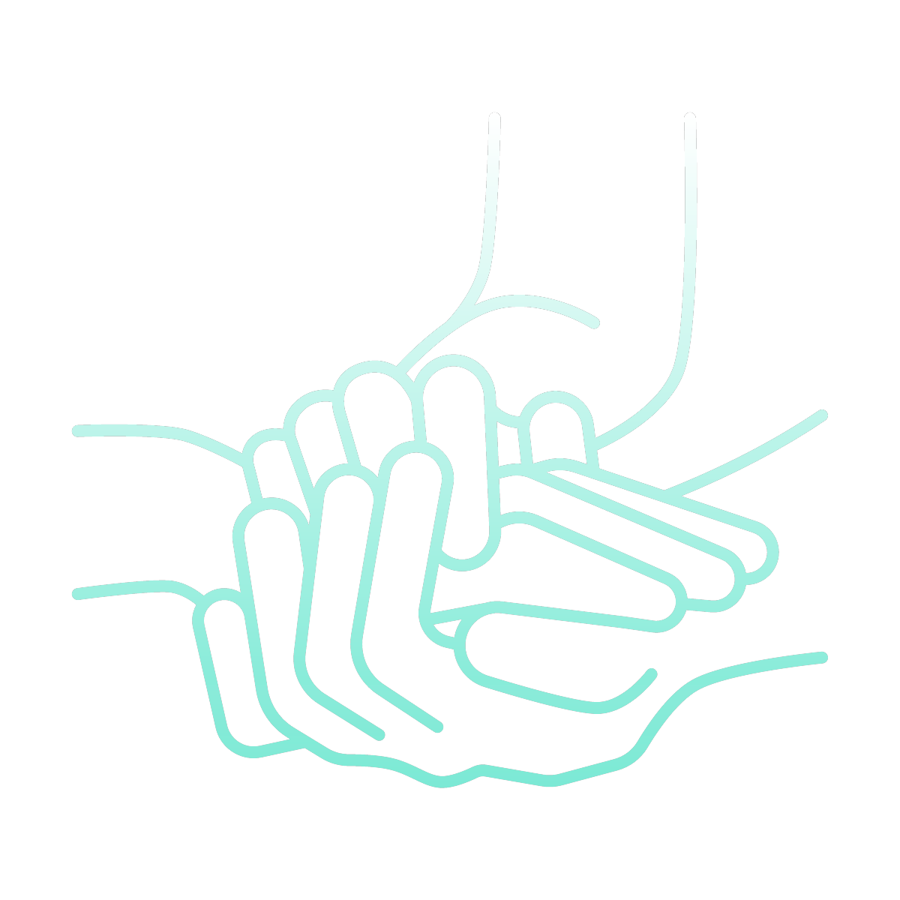

<!DOCTYPE html>
<html lang="pt-br">
<head>
    <meta charset="UTF-8">
    <meta http-equiv="X-UA-Compatible" content="IE=edge">
    <meta name="viewport" content="width=device-width, initial-scale=1.0">
    <link rel="stylesheet" href="css/slider.css">
    <title>Slider</title>
</head>
<body>
    <div class="slider">
        <div class="slides">
            <!--Radio Buttons-->
            <input type="radio" name="radio-btn" id="radio1" class="slides-input" checked>
            <input type="radio" name="radio-btn" id="radio2" class="slides-input">
            <input type="radio" name="radio-btn" id="radio3" class="slides-input">
            <!--Fim Radio Buttons-->

            <!--Slide Images-->
            <div class="slide first">
                
            </div>
            <div class="slide">
                
            </div>
            <div class="slide">
                
            </div>
            <!--Fim Slide Images-->

            <!--Navigation auto-->
            <div class="navigation-auto">
                <div class="auto-btn nav1"></div>
                <div class="auto-btn nav2"></div>
                <div class="auto-btn nav3"></div>
            </div>
            <!--Fim Navigation auto-->

            <!--Manual Navigation-->
            <div class="manual-navigation">
                <label for="radio1" class="manual-btn"></label>
                <label for="radio2" class="manual-btn"></label>
                <label for="radio3" class="manual-btn"></label>
            </div>
            <!--Fim Manual Navigation-->
        </div>
    </div>
    <script src="js/slider.js"></script>
</body>
</html>

<div class="sobre-nos">
    <h2 class="title">Sobre</h2>
    <p>A AJA surgiu em 2022 com objetivo de integrar tecnologia e saúde para desenvolver soluções modernas para facilitar o tratamento de pessoas. Assim, colaboramos com nossos parceiros para preservar a vida, oferecer mais bem estar e autonomia para nossos clientes. Somos uma empresa ao qual preza pelo bem estar e saúde de nós seres humanos e que deseja mostrar que a tecnologia é a principal aliada para o nosso futuro.</p>
</div><!--sobre-nos-->
<div class="center d-flex">
    <div class="pilares">
        <div class="pilares-item">
            <i class="text-center fab fa-pagelines"></i>
            <h3>Inovação</h3>
            <p>Acreditamos que inovação é a exploração de novas ideias que de algum modo alcancem o sucesso.</p>
        </div>
        <div class="pilares-item">
            <i class="text-center fas fa-coffee"></i>
            <h3>Tecnologia</h3>
            <p>Para nós a tecnologia é o conjunto de métodos e técnicas que nos permitem te fazer chegar ao sucesso.</p>
        </div>
        <div class="pilares-item">
            <i class="text-center fas fa-table"></i>
            <h3>Humanização</h3>
            <p>Com humanização prezamos pela qualidade das relações entre as pessoas nos serviços de saúde.</p>
        </div>
    </div><!--pilares-->
</div>
</div>
<div class="ods">
<div class="center d-flex">
    <div class="ods-logo">
        
        <h2 class="ods-logo_title">AJA</h2>
        <h4 class="ods-logo_subtitle">Desenvolvendo softwares, criando bem estar</h4>
    </div>
    <div class="ods-sobre">
        <h2 class="ods-sobre_title"></h2>
        <p class="ods-sobre_p">Nós da equipe AJA, contribuímos com a Agenda 2030 que possui é um plano de ação global que reúne 17 objetivos de desenvolvimento sustentável, ao qual busca promover vida digna a todos. Comovidos com essa causa, temos como foco em nossos projetos contribuir com a ODS 3: “Saúde e bem estar”.</p>
        <p class="ods-sobre_p">Equipe Aja</p>
        <div class="ods-pilares">
            <div class="ods-pilares_item">
                
                Inovação
            </div>
            <div class="ods-pilares_item">
                
                Humanização
            </div>
            <div class="ods-pilares_item">
                
                Tecnologia
            </div>
        </div>

    </div>
</div>
</div><!--ods-->